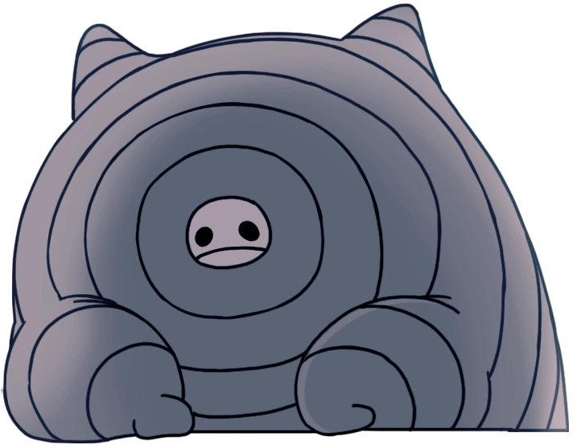
KINGDOM'S EDGE
Bardoon is a very large and old caterpillar that went up to Kingdom's Edge in hopes of escaping the Infected. He is quite knowledgable on Wyrms despite not being one himself. He is also one of the few we meet that can tell when we have used the Dream Nail on them and who do not take damage when used.
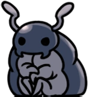
FUNGAL WASTES
Bretta is a hopeless romantic who hopes to find her prince charming. She does- the Knight, who listens to her muttering to herself in the dark. She eventually leaves Hallownest after realizing she won't be able to find her destined companion if she sits around and keeps waiting.
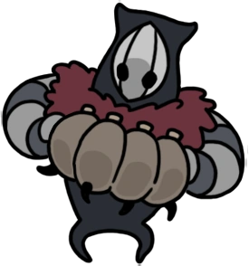
Grimm's Tent | Dirtmouth
Brumm is an accordition player inside Grimm's tent. He has second thoughts about the Ritual and plans to disrupt it by destroying the Nightmare Heart. Should the Knight choose to banish the Grimm Troupe, he offers to help them yet does not resent the Knight should he choose to complete the Ritual.
JONI'S REPOSE | HOWLING CLIFFS
Joni was just a humble bug that gave blessings that turned fluids into lifeblood, a health buff that does not regenerate but allows you to take more damage. She passed at some point, due to unspecified reasons. You may use dream nail on her when you have picked up her blessing and her spirit appears.
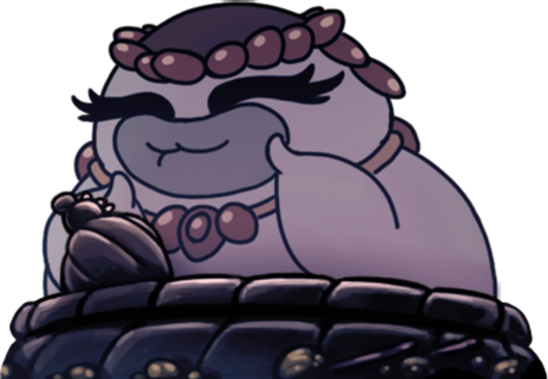
FORGOTTEN CROSSROADS
Salubra is well-versed in the art of Charms and Charm notches, collecting and selling them to passerby in exchange for Geo (currency). She is unaware of the fall of the Kingdom. You may buy her blessing for 800 Geo, which generates SOUL while at rest on a bench.
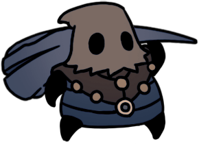
Wanderer
Cloth is courageous warrior who is on a quest to prove her strength and bravery. However, due to her fearful nature, she sometimes escapes her foes by hiding underground and sleeping, much like real life cicadas which take a few years to come out of the ground. If the Knight helps her fend off some enemies at the end of the Failed Tramway, she helps the knight fend off the Mantis Traitors. Together, they fight against the Traitor Lord.

DIRTMOUTH
Confessor Jiji was asleep for a long time, hidden behind a stone door at the base of Crystal Peak. She woke up when the Knight entered, immediately noticing how much the Kingdom has decayed. She has sensed the Radience's presence in her sleep, wondering what would happen should she fall asleep again. She offers to recover the Knight's Shade from wherever it spawned in the world for Rancid Eggs.
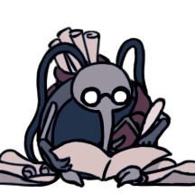
ALL MAJOR AREAS
Cornifer aspires to map the entire Kingdom of Hallownest, appearing in every place he sells the map of. The Knight first encounters Cornifer in the Forgotten Crossroads where he tells the Knight to visit his wife's (Iselda) shop in Dirtmouth. He can be heard humming from across the room, scattered papers leading to where he sits, mapping out the zone.
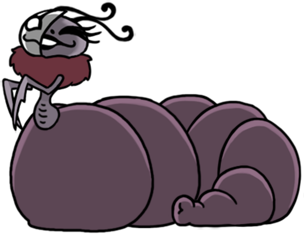
Dirtmouth
Divine is looking for the source of the smell coming from below her tent, which happens to be Leg Eater. She upgrades the Fragile Charms made by Leg Eater into Unbreakable Charms (by eating and excreting them) for a hefty amount of Geo (9000+). If the Knight upgrades all the Fragile Charms and equips one of them and visits to Leg Eater, he goes aboveground to find Divine. Upon returning to Divine, the Knight notices the Leg Eater's claws discarded on the floor of her tent.
Greenpath, Resting Grounds
The three dreamers, Monomon the Teacher, Lurien the Watcher, and Herrah the Beast, are beings who sacrificed their bodies and minds to contain the Infection through their eternal rest, sealing the Hollow Knight away in the Dream Realm. They must be defeated by the Knight with the Dream Nail and killing their Dream form. Only then will the Knight be able to enter the Black Egg to get rid of the Infection once and for all.
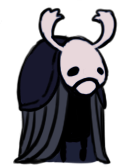
Dirtmouth
Elderbug is the last and oldest resident of Dirtmouth. Despite this, he was not around for the fall of Hallownest, indicating how long ago the Infection first started. He has seen many travelers go into the Forgotten Crossroads only to never return. This has made him pessimistic and a non-believer in dreams. He is the first to warn the Knight about the dangers ahead caused by the Infection and continues to give the Knight advice about the next area it should travel to.

City of Tears
Eternal Emilita used to be among the upper echelon in Hallownest's society, but was cast out. Ironically, now, they live while the rest of Hallownest's upperclass wanderers around, dead and mindless due to the Infection. This fact brings them great joy. Their room, hidden behind a series of hidden walls, can be used as a Shortcut between the Royal Waterways and the City of Tears.

Junk Pit
The fluke hermit is the first sentient, uninfected and able to speak fluke that the Knight meets. She collects the junk from the Junk Pit, regarding it as her mother's (Flukemarm) treasures. She notes that her mother appears to be angry, hinting at infection. She can be found at the Northeastern side of the Junk Pit through a tall passage.
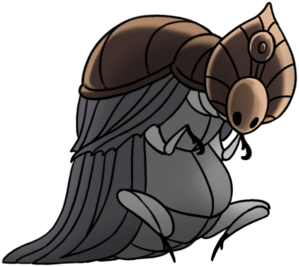
Junk Pit
The Godseeker carries an entire tribe of Godseekers in her mind, in a complex dream world known as the Godhome. They originate from the Land of Storms, where they were abandonded by their gods. They have come to Hallownest looking for new gods using a Godtuner, a device used to find the resonance of powerful beings such as the Pale King or the Radiance. At some point, for unknown reasons, the Godseeker went into hibernation and was locked away in a sarcophagus which was washed down the Waterways into the Junk Pit, where it can be unlocked using Simple Key.

Resting Grounds
The Grey Mourner (real name is Ze'mer) was originally one of the Five Great Knights of Hallownest. Her quest entails delivering a flower to her late lover's grave in the Queen's Gardens, who was the daughter of the Traitor Lord. However, the mantis tribe denied their union because she was not a native, coming from a kingdom she calls "Lands Serene", where the Everblooms come from (also known as Delicate Flowers). After her quest is completed, she dissipates, leaving behind a Mask Shard.
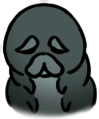
Forgotten Crossroads
The Grubfather mourns the lost gurbs who have been stored in jars around the Kingdom by The Collector. Grubs are known for their keen sense of direction, excellent tunneling skills, and fascination with shiny things such as Geo and Relics. Freeing some grubs will prompt the Grubfather to reward you with an amount of Geo and other items corresponding to the amount of grubs you have freed.
Beast's Den
Herrah the Beast is the mother of Hornet, once the Queen of the Spider Tribe, but now is laid to eternal rest as a Dreamer. She was also originally a member of the Weavers from Pharloom, but married Deepnest's sire, leading her to become queen. When her partner died, it was impossible for her to have a child, so she became a Dreamer on the condition that the Pale King would father her child, who would become Hornet. However, she and Hornet were not that close because she had to become a Dreamer.
The Hive
Vespa was the monarch of the Hive before it was consumed by the Infection. This occured because at some point in time due to unknown reasons, Vespa passed away, unable to leave the Hive due to her large size. Vespa had declined the Pale King's offer to join the Kingdom of Hallownest, preferring to keep to the walled-off tribe of the Hive. After Herrah became a dreamer, she trained and raised Hornet, leading her to adapt her fighting style with her Needle being made of Hivesteel.
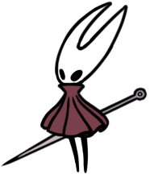
Wanderer
Hornet is the half-sibling of the Knight and all the Vessels as they share the same father (the Pale King). She is a skilled warrior who seeks to protect the ruins of Hallownest and find a solution to the Infection, just like the Knight. She is fought twice, as the Protector and as the Sentinel. Throughout their journey, she helps out the Knight differently depending on the actions the player takes. Her fate depends on the path that the Knight chooses, either becoming a Dreamer to seal the Black Egg (Sealed Siblings), never becoming involved without the Void Heart, or having to move on with either the Knight's death (Dream No More) or the Hollow Knight's reappearance (Embrace the Void).
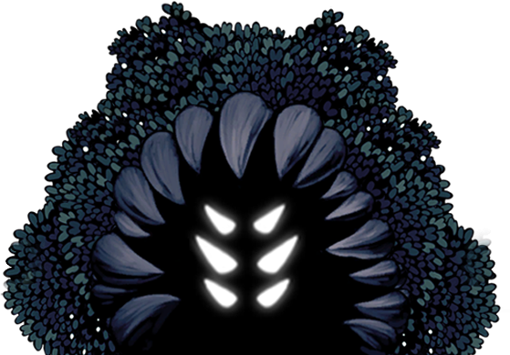
Greenpath
The Hunter originally had siblings who would hunt each other in the nest, but now he is alone. He attempts to kill every living being in sight, believing it to be the nature of the Hunt, even attempting to eat certain creatures depspite them being Infected. He gives the Knight the Hunter's Journal, a bestiary containing all the enemies in Hallownest, which can be completed by defeating a specified number of each enemy. When completed,upon return to the Hunter, the Knight is given the Hunter's Mark and the True Hunter Achievement.
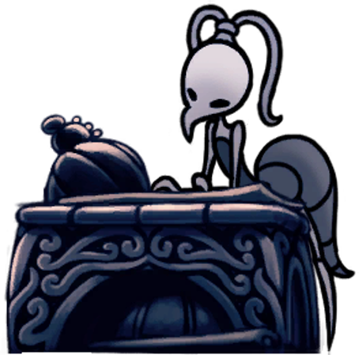
Dirtmouth
Iselda is a map merchant like her husband, Cornifer. However, unlike him, she prefers to stay in their shop. Before they were married, Iselda used to be a fighter before following Cornifer to Hallownest where she settled down into a quiet life. Her shop only opens either after the Knight listens to Cornifer, defeats the False Knight, or skips him by leaving the battle. She sells the same maps as her husband for a higher price.